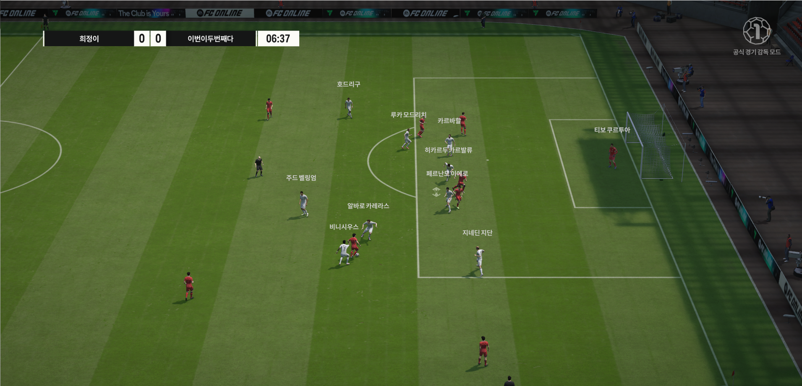
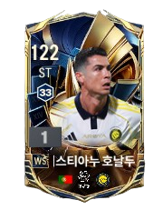
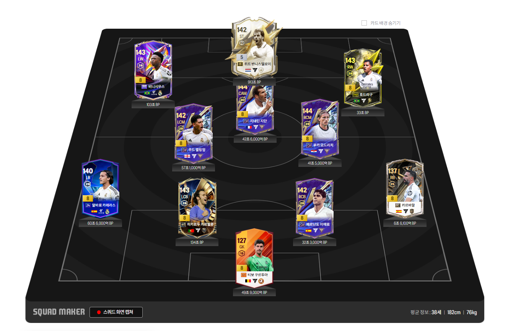
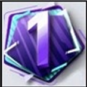
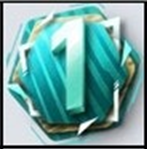
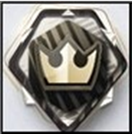

FIFA ONLINE 4는 다양한 선수들을 활용해 자신만의 팀을 만들고, 직접 경기를 플레이할 수 있는 온라인 축구 게임입니다. 선수의 움직임, 전술, 경기 흐름을 생각하며 플레이하는 재미가 있습니다.

선수를 클릭하면 오른쪽에 선수 소개와 함께 선수 카드 이미지가 표시됩니다.

호날두는 강력한 슈팅과 뛰어난 위치 선정이 강점인 공격수입니다. 공중볼 경합과 마무리 능력이 뛰어나며, 한 번의 기회도 득점으로 연결할 수 있는 선수입니다.

FIFA ONLINE 4에서는 원하는 선수들을 모아 자신만의 스쿼드를 만들 수 있습니다. 선수의 포지션, 능력치, 팀 케미, 포메이션을 고려하여 팀을 구성하면 더 완성도 높은 경기를 할 수 있습니다.
게임모드 아이콘을 클릭하면 아래쪽에 선택한 모드의 설명이 표시됩니다.
공식 경기는 다른 유저와 실력을 겨루는 대표적인 경쟁 모드입니다. 승패에 따라 점수와 티어가 달라지기 때문에 자신의 실력을 확인하기 좋습니다.
경기를 하며 티어를 올려 더 높은 경지에 오르세요.


